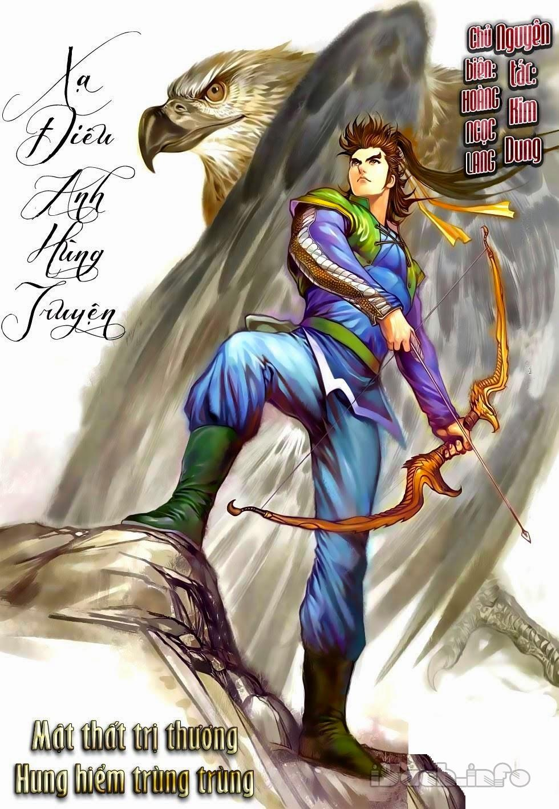

Nước sông Tiền Đường mênh mông, ngày đêm vòng qua thôn Ngưu Gia ở Lâm An không ngừng chảy ra biển lớn.
Một dãy vài mươi cây bách ven sông lá đỏ như lửa, đang lúc tháng tám. Đồng cỏ quanh thôn đang bắt đầu úa vàng,
dưới ánh tà dương càng thêm mấy phần hoang liêu.
Dưới hai gốc tùng lớn có một đám thôn dân, đàn ông đàn bà và khoảng mười mấy đứa trẻ con đang tập trung lắng
nghe một ông già gầy gò kể chuyện. Người kể chuyện khoảng năm mươi tuổi, mặc một chiếc trường bào màu xanh cũ đã
bạc phếch biến thành màu chàm. Chỉ nghe y khua hai miếng phách gỗ hoa lê, tay trái cầm dùi đánh vào chiếc trống
tiểu yết mấy tiếng "Thùng thùng", xướng:Đào con vô chủ tự ra hoa.
Khói cỏ mênh mông bóng ác tà.
Mấy chỗ tường hoang quanh giếng cạn
Trước đây vốn vẫn chốn thôn gia
Người kể chuyện cầm phách gỗ khua lắc cắc mấy tiếng, nói:
"Bài thơ thất ngôn này nói sau cơn binh lửa, những nơi vốn là nhà cửa đều trở thành hoang vu đổ nát.
Mới rồi tiểu nhân đã kể gia đình Diệp lão hán bốn người bi hoan ly hợp, họp rồi lại tan, tan rồi lại họp.
Bốn người bọn họ bị quân Kim làm chia lìa, cũng may mà lại đoàn tụ được,
vô cùng vui mừng trở lại cố hương thì nhà cửa đã bị quân Kim đốt sạch, không biết làm sao đành tới Biện Lương tìm cách mưu sinh.
Không ngờ trời mây gió khó lường, người rủi may chớp mắt.
Bốn người bọn họ mới tới thành Biện Lương thì lại gặp một toán quân Kim kéo tới.
Tên dẫn đầu đưa đôi mắt ba góc nhìn qua thấy Diệp Tam thư xinh đẹp bèn nhảy xuống ngựa ôm chặt lấy nàng
hô hô cười rộ rồi nhấc nàng đặt lên ngựa, nói:
"Tiểu cô nương, theo ta về nhà hầu hạ lão gia."
Nhưng Diệp Tam thư đời nào chịu nghe, ra sức giẫy giụa. Tên võ quan Kim binh ấy nói:
"Ngươi không chịu theo ta thì ta sẽ giết hết cha mẹ anh em ngươi!"
Rồi giơ lang nha bổng lên đập luôn một nhát vào đầu Diệp Tứ lang,
ập tức xương sọ vỡ toang óc bắn tung tóe chết ngay tại chỗ. Đúng là
: Âm cảnh lại thêm hồn chết uổng,
Dương gian chẳng thấy bóng trai lành!Diệp lão hán và vợ sợ điếng người, nhào lên phía trước ôm xác con cất tiếng khóc lớn.
Tên võ quan kia lại nhấc lang nha bổng lên, mỗi nhát một mạng, tính luôn hai người. Diệp Tam thư lại không kêu khóc mà nói:
"Trưởng quan đừng nổi giận, ta theo ông về mà!".
Tên võ quan cả mừng, đưa Diệp Tam thư đi. Không ngờ Diệp Tam thư nhân lúc y không đề phòng,
đột nhiên sấn lên tuốt thanh yêu đao của y, nhắm đúng tim y một đao phóng tới, nói thì chậm chứ lúc ấy rất nhanh,
một nhát đao ấy đâm ra, nàng nghĩ đã báo thù được cho cha mẹ và em, không ngờ tên võ quan ấy chinh chiến lâu năm,
võ nghệ cao cường, thuận tay đẩy một cái. Diệp Tam thư lập tức bắn ra. Tên võ quan vừa mắng một câu "Con tiện nhân?"
thì Diệp Tam thư đã nhấc ngọn đao lên cứa ngang cổ mình một nhát. Đáng thương cho nàng: